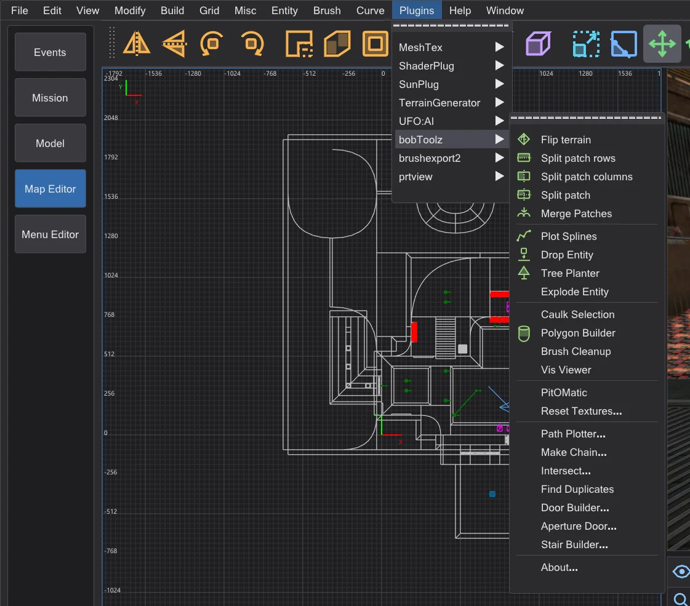
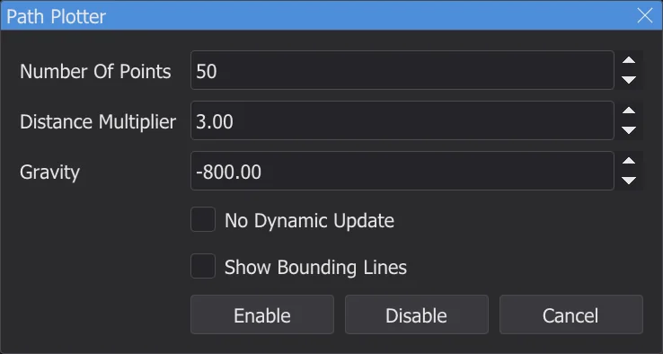
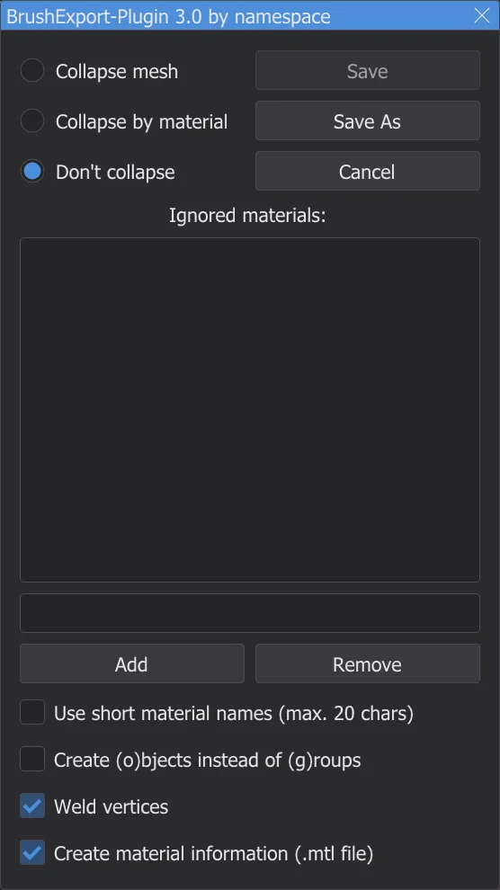
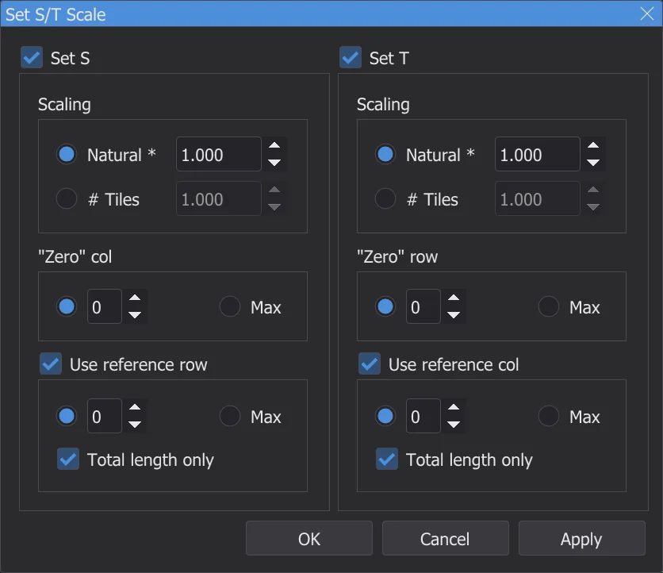

Editor map: pluginy
Nabídka Plugins má každý plugin NetRadiant-Custom - bobToolz, brushexport2, MeshTex, ShaderPlug, SunPlug, UFO:AI a prtview - se všemi jejich položkami a dialogy, převedené ze zdrojového kódu.
Nabídka ⟦Plugins⟧#

Picture still in EnglishPoložky si ponechávají anglické názvy NetRadiant-Custom, jak je tam pluginy mají; dialogy jsou v jazyce programu - s Pojmy jako NetRadiant (anglicky) v angličtině NetRadiant-Custom. Každý plugin má položku About. Zprávy jdou do konzole, chyby červeně. Každá změna, kterou plugin udělá, je jeden krok zpět.
bobToolz#
| Položka | Co dělá |
|---|---|
| Flip terrain | Dva vybrané brushe terénu (trojboké hranoly se společnou hranou): otočí jejich společnou úhlopříčku na druhou stranu. |
| Split patch rows / columns, Split patch | Rozřízne vybraný patch na pruhy podél řádků, sloupců nebo obojího. |
| Merge Patches | Spojí dva nebo více vybraných patchů, které sdílejí hranu, do jednoho. |
| Plot Splines | Kreslí dráhy řetězů info_train_spline_main s jejich body info_train_spline_control (viz Make Chain). |
| Tree Planter, Drop Entity | Vyberte brushe země a zapněte Tree Planter: každé levé kliknutí v pohledu XY na ně položí entitu z data\karte\bt\tp_ent.txt s náhodným modelem, úhlem a měřítkem (v dodané podobě soubor jmenuje modely stromů z Quake - dejte tam své vlastní modely). Drop Entity pustí vybrané entity na tytéž brushe. |
| Explode Entity | Rozdělí vybranou brush entitu: každý její brush se stane samostatnou entitou se stejnými klíči (ne worldspawn). |
| Caulk Selection | Dá každé stěně vybraných brushů a patchů texturu caulk. |
| Polygon Builder | Dialog Stavitel mnohoúhelníků: změní jeden vybraný brush na hranol se zadaným počtem stran - volitelně dutý s okrajem, obrácený, zarovnaný k horní hraně. |
| Brush Cleanup | Odstraní neplatné a duplicitní roviny ze všech brushů mapy a nahlásí kolik. |
| Vis Viewer | Přečte zkompilovaný <map>.bsp vedle mapy - po sestavení, nebo originál po Otevřít .bsp - a ukáže, které listy BSP jsou vidět z kamery nebo výběru; okno Listy BSP je vypíše. |
| PitOMatic | Změní jeden vybraný brush na smrtící jámu: triggery pro výkřik při pádu (*falling1.wav) a pro odebrání powerupů, trigger_hurt na dně. |
| Reset Textures... | Dialog Obnovení textur: nahradí název textury a obnoví měřítko, posun a otočení - na vybraných nebo na všech brushích. |
| Path Plotter... | Ukáže letovou dráhu trigger_push - viz níže. |
| Make Chain... | Dialog Vytvořit řetěz: sestaví řetěz entit info_train_spline_main s řídicími body, pojmenovaných podle základního názvu. |
| Intersect..., Find Duplicates | Vybere brushe, které se navzájem protínají (v celé mapě nebo mezi vybranými, volitelně jen duplikáty), nebo každý brush, který přesně duplikuje jiný. |
| Door Builder... | Změní jeden vybraný brush na dvě poloviny dveří (func_door) s texturami dveří a obložení z bt\door-tex*.txt, sever-jih nebo východ-západ. |
| Aperture Door... | Postaví z vybraného brushe clonové dveře (duhovku ze segmentů) - z parametrů nebo z windingu. |
| Stair Builder... | Změní jeden vybraný brush na schody: výška schodu, směr, styl (Original, Bob's Style, Corner Style), hlavní textura a textura podstupnice, volitelně detailní brushe. |
Path Plotter
- 1
Vyberte
trigger_push, který mátarget. - 2
Plugins > bobToolz > Path Plotter... otevře Kreslič drah: počet bodů, násobitel vzdálenosti a gravitace dráhy. Zapnout ji nakreslí ve 2D pohledech a v kameře.

Picture still in EnglishDialog Kreslič drah s hodnotami NetRadiant-Custom. - 3
Posuňte cíl - dráha ho sleduje, pokud není zaškrtnuto Bez dynamické aktualizace. Vypnout ji odebere.

brushexport2#

Picture still in EnglishExport selected as Wavefront Object zapíše vybrané brushe jako model .obj, například pro pokračování v modelovacím programu. Okno volí, jak se stěny seskupí (Sloučit síť, Sloučit podle materiálu, Neslučovat), které materiály vynechat (Ignorované materiály: - například textures/common/caulk) a zda zkracovat názvy materiálů, zapisovat objekty místo skupin, svařit vrcholy a zapsat soubor .mtl. Uložit jako se zeptá na soubor - napoprvé ve složce karte_export ve složce nastavení - a Uložit zapíše znovu tentýž soubor.
MeshTex#

Picture still in EnglishMeshTex pokládá textury na patche - křivky, oblouky, terén - tam, kde Inspektor povrchu naráží na své meze. Nastavit měřítko S/T nastaví měřítko podél S a T: přirozené (jako na stěně brushe, *) nebo jako počet dlaždic, počítáno od "nulového" sloupce nebo řádku, volitelně měřeno podél referenčního řádku nebo sloupce. Zjistit informace ukáže měřítko vybraného patche a může ho předat do Nastavit měřítko S/T. Obecná funkce nastaví S a T jako lineární funkci vzdáleností řádků a sloupců. Položky Align přizpůsobí texturu hranám patche (minimum nebo maximum, roztažené nebo zmenšené, nebo automaticky); Help... ukáže vlastní vysvětlení MeshTex.
ShaderPlug, SunPlug, UFO:AI, prtview#
| Plugin | Co dělá |
|---|---|
| ShaderPlug | Create tag file zapíše soubor štítků prohlížeče textur: každý shader dostane jako štítek název svého souboru .shader. Prohlížeč textur ho hned znovu načte (NetRadiant-Custom až po restartu). |
| SunPlug | V NetRadiant-Custom obsahuje ET-MapCoordinator: spočítá mapcoordsmins a mapcoordsmaxs pro taktickou mapu Enemy Territory z velikosti mapy a zapíše je do worldspawn pomocí Nastavit. Jedi Academy tyto klíče nepoužívá. |
| UFO:AI | Nástroje pro hru UFO:AI: filtry podle jejích příznaků obsahu (NoDraw, WeaponClip, ActorClip, StepOn, Level 1 až 8), Perform check a její klíče worldspawn (Worldspawn, Worldspawn reset). Jsou tu, protože NetRadiant-Custom je ukazuje pro každou hru. |
| prtview | Ukazuje portály poslední fáze BSP - viz Editor map: kompilace mapy. |